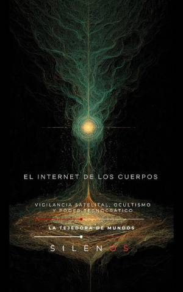

Illuminati
EL INTERNET DE LOS CUERPOS : Convergencia Bio-Digital y Transhumanismo Esotérico
Sinopsis
¿Dónde termina tu biología y comienza el algoritmo? El Internet de los Cuerpos no es solo un libro sobre tecnología; es una autopsia filosófica del presente y un mapa perturbador de nuestro futuro inmediato. En estas páginas, se explora cómo el cuerpo humano ha dejado de ser un templo soberano para convertirse en el último periférico de una red global. Una inmersión en la vigilancia somática Desde el pulso digitalizado hasta la colonización interna del deseo, esta obra analiza la transición del organismo vivo al sensor periférico. A través de una narrativa profunda y provocadora, los autores desglosan cómo dispositivos cotidianos, wearables y biosensores están tejiendo una infraestructura de control invisible que procesa nuestra existencia en tiempo real. Lo que descubrirás en esta obra: La Metamorfosis del Sujeto: Cómo la identidad ya no reside en el pensamiento reflexivo, sino en la agregación de métricas y datos transaccionales. Arquitectura del Deseo: El análisis de cómo los algoritmos de optimización vital erosionan el libre albedrío, sugiriendo decisiones antes de que alcancen nuestra conciencia. El Gran Panóptico de Datos: La disolución de la privacidad biológica y el fin del secreto corporal ante el ojo absoluto del sistema. Transhumanismo Esotérico: Una visión única sobre la integración profunda entre la carne y el silicio, y la búsqueda de una trascendencia gestionada por la red. ¿Por qué leer este libro? Si te interesa la ciberseguridad, la filosofía contemporánea, el impacto de la inteligencia artificial o el futuro de la autonomía humana, este libro es una lectura obligatoria. Es una invitación a despertar ante la "docilidad programada" y a cuestionar el pacto de comodidad que hemos firmado con la tecnología. Únete a la conversación sobre la frontera final de la privacidad: tu propio cuerpo.